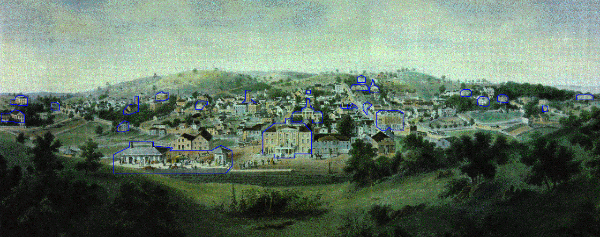

The following lithograph of Staunton in the late 1850s offers a detailed look at the small city. Thanks to the Historic Staunton Foundation, you are able to click on twenty-two houses and buildings in 1857 Staunton and see them in close-up photographs. You may also read about the buildings and their histories in greater detail, or see the ad for the original lithograph.
